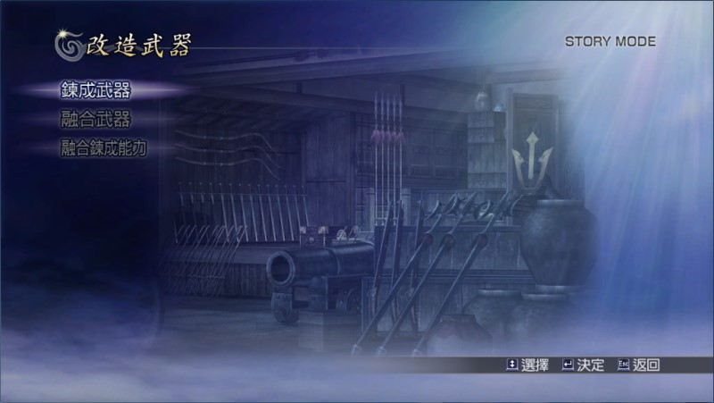
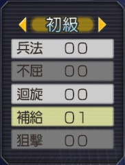

各項鍊成能力的作用
兵法 增加能力提升道具的持續時間。
不屈 於瀕死狀態起身時，攻擊力增強為 2 倍。
迴旋 容易重整態勢。
補給 使敵兵以一定機率掉落桃子。
狙擊 提升箭和射擊的威力。
天活 無關體力，可直接使用真．無雙亂舞和秘奧義。
天陣 無關體力，可直接使用合體技。
彎曲 減輕自身所受到的損傷。
頑強 發動蓄力攻擊時，可承受敵人攻擊。
飛龍 可於蓄力攻擊時跳躍。
金甲 即便遭箭擊或射擊，動作也不會中斷。
聯手 待命武將只需要無雙值半滿便可發動援護攻擊。
賦活 隨著時間自行恢復無雙值。
再生 在體力耗盡時，可恢復體力一次。
天舞 無雙值全滿時，所有攻擊將附加屬性。
以上是官方說法，很多項目看完也不知道是怎樣對吧？這時建議閱讀「Landius 的亞人類部屋」的文章：《無雙OROCHI～魔王再臨．鍊成能力心得》，裡面是玩家的實戰心得，比較能了解各項的實際作用。各項鍊成能力所推薦的角色也很實用。
鍊成能力組成法
狙擊
屬性：勇猛 1、神速 1、極意 1
素材：黃金
天陣
屬性：炎 1、旋風 1、分身 1、極意 1
素材：金剛石
彎曲
屬性：陽 1、吸生 1、旋風 1、背水 1
素材：孔雀石
頑強
屬性：冰 1、吸活 1、勇猛 1、分身 1、極意 1
素材：青玉、白玉環
飛龍
屬性：斬 1、破天 1、分身 1、神速 1、極意 1
素材：水晶、神行符
金甲
屬性：雷 1、斬 1、吸活 1、分身 1、神速 1、背水 1
素材：紅玉、定風珠
聯手
屬性：冰 1、破天 1、勇猛 1、旋風 1、分身 1、神速 1
素材：定海珠、陰陽珠、吸魂砂、混天綾
賦活
屬性：炎 2、陽 2、吸生 2、吸活 2、旋風 2、神速 2、極意 2
素材：風火輪、勾玉、神氣環、龍首之玉
再生
屬性：冰 2、陽 2、吸生 2、吸活 2、旋風 2、分身 2、神速 2、背水 2
素材：朱雀翼、青龍膽、白虎牙、玄武甲
天舞
屬性：炎 2、冰 2、雷 2、陽 2、斬 2、吸活 2、勇猛 2、極意 2
素材：蓬萊玉枝、佛御石缽、火鼠之裘、燕子安貝
鍊成過程簡介
從選單進入「兵營」→「改造武器」後，會看到鍊成分兩部份：「鍊成武器」與「融合練成能力」。

其實很簡單，過程是這樣的：
１、進入「鍊成武器」，將不要的武器當作材料，拿來與素材鍊成出能力。
２、鍊出的能力，其數量會增加一個，如圖：

鍊成「補給」後，數量從 00 變成 01。
３、這時再到「融合鍊成能力」，將鍊成出來的能力融合到武器上面即可。
換句話說，並不是角色所裝備的武器要滿足屬性條件才能把「補給」鍊上去，而是先把武器當材料鍊出能力來，再融合到武器上面去，因此玩家依然可以依自己喜好搭配屬性。
最後，素材用過並不會消失，可以重複使用。
鍊成能力的裝配時機建議（僅供參考）
兵法 想讓力型角色增加戰神之斧時間的話。
不屈 需要這個效果的話，裝屬性的「背水」更好。
迴旋 許褚。
補給 需要這個效果的話，裝特技的「提升運氣」就好。
狙擊 黃忠、夏侯淵、曹仁、孫尚香、卑彌呼、真．遠呂智、雜賀孫市、伊達政宗、稻
姬、長宗我部元親。
天活 左慈、女媧、女忍、伊達政宗、稻姬、淺井長政、前田利家、長宗我部元親；司馬
懿、孟獲、遠呂智。
天陣 全部角色都適合裝配，尤其有特殊合體技的角色組合中，適合選一人裝配。
彎曲 全部角色都適合裝配。
頑強 蓄力攻擊的動作有破綻、或者有 C1-3 的角色（蓄力攻擊按下去就是無敵狀態的
攻擊）。
飛龍 絕大部份的力型與技型角色。（評價最高的鍊成能力，建議多搜尋飛龍的資料來參
考。）
金甲 全部角色都適合裝配。（不被遠距攻擊中斷）
聯手 星彩、太史慈。
賦活 搭配無雙回復與吸活時：黃忠、曹操、曹丕、呂蒙、大喬、祝融、太公望、卑彌
呼、石田三成、立花誾千代、加西亞。
再生 在「超難」容易死的玩家。
天舞 專門用來挑戰「超難」的角色、或者自己覺得應該很強卻不強的角色（像是張
飛）、甚至希望關平變得跟本傳一樣猛的人也適合裝配。
力型 V.S. 頑強
力型是玩家發動任何攻擊時，不會被敵人的普通攻擊（含弓箭與鎗擊）中斷動作，但會被類型招式中斷。
而頑強是玩家發動蓄力攻擊時，可以承受敵人任何攻擊，包括類型招式。
因此力型角色裝頑強還是有價值的。